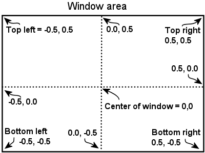
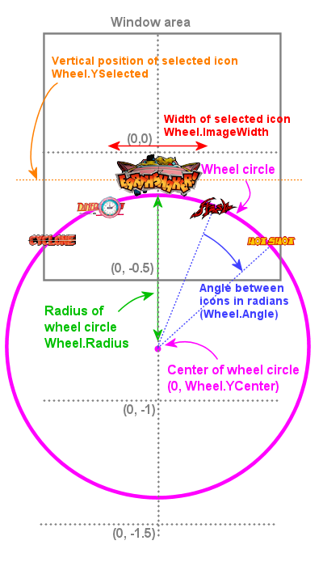

You can change the geometry of the "game wheel" layout in the main window by changing some variables in the settings file (Settings.txt).
The game wheel settings work in terms of the coordinate system that the Windows Direct3D graphics system uses, which is a little different from what you're probably to if you've done any "normal" 2D computer graphics. You're probably used to thinking of the computer screen in terms of pixels. D3D doesn't use pixels. It uses an abstract coordinate system that's more like what you probably used in your high school algebra class. In the D3D system, the whole window is exactly 1 unit tall and 1 unit wide, and its exact center is at the (x,y) coordinate (0,0). These coordinates increase to the right and in the upwards direction. Think of it as an algebraic graph positioned with the origin (coordinates 0,0) at the very center of the screen:
Apart from the abstract units, pay close attention to the way the Y (vertical) axis is reversed from the normal 2D pixel coordinate system. Pixel coordinates usually start at 0 at the top row, and increase in the down direction, so that the bottom of a 1000-pixel-tall window is at row 999. In contrast, the Y coordinates in the D3D system increase in the upwards direction. The X coordinates still increase to the right, which is the same as the 2D convention, but of course they start at a negative value (-0.5) at the left side of the screen rather than starting at zero.
With that coordinate system in mind, here are the Settings.txt parameters that control the wheel layout. Note that, as with all Settings.txt parameters, capitalization is important - you have to enter the names exactly as shown, using the exact same upper- and lower-case letters.
Note that the game wheel always shows five icons, no matter how large or small the angle is: the current selection at the center, two icons to the left, and two icons to the right. Even if you make the angle small enough to fit more icons into view, PinballY will still only display two on each side, so it's best to keep the angle in a range where you'd only see those five anyway. It might look odd if you leave too much empty space at the sides.
Here's a graphical view of the parameters.
